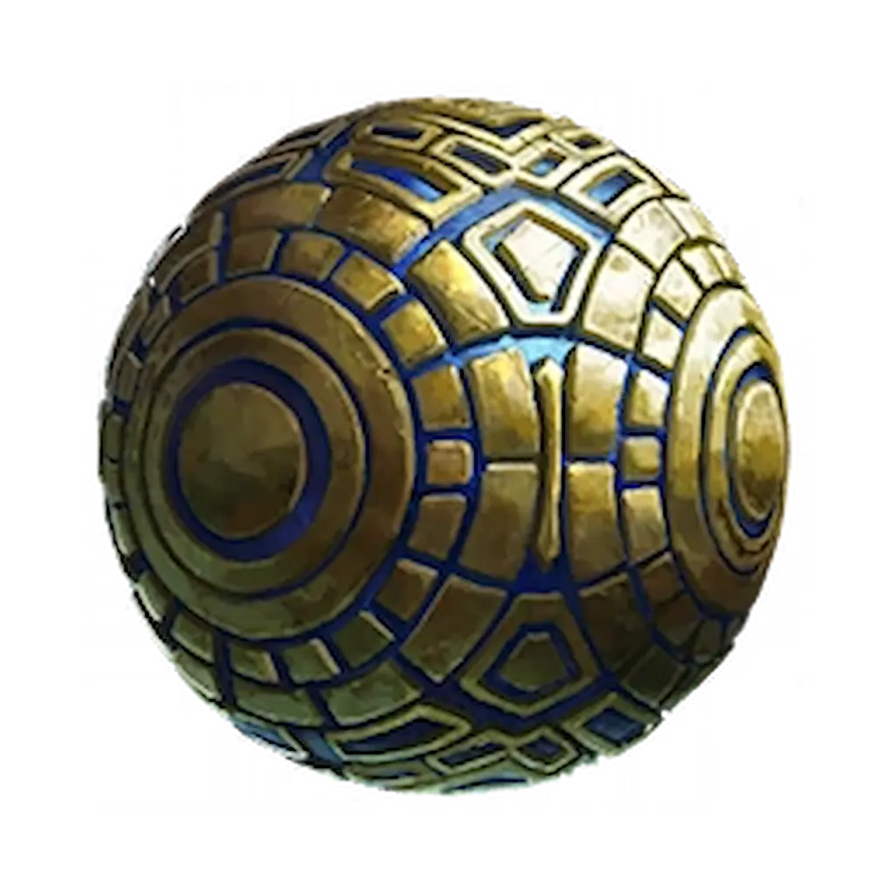
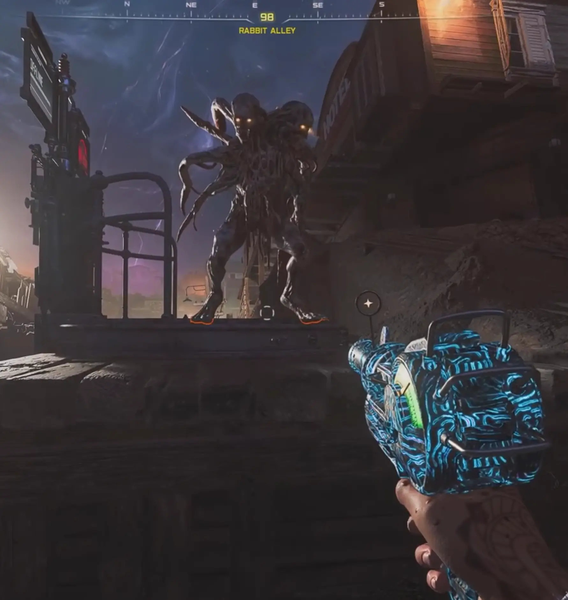

Musisz mieć ukończone główne zadanie na mapie Ashes Of The Damned. Musisz grać na poziomie Tier 1. Wyzwanie rozpocznie się od rundy 40+.

Waszym pierwszym zadaniem jest przetrwanie. Musicie dobić do 40. rundy. Dopiero od tego momentu na mapie zaczną spawnować się przeciwnicy typu Doppleghast, którzy są niezbędni do rozpoczęcia wyzwania.
To zadanie wymaga nieco zręczności:

Po wejściu w portal gra nałoży żółty filtr, a zasady drastycznie się zmienią:
PRO TIP: Bardzo przydatny jest perk Vulture (Atut Sępa), który pozwala zbierać paczki amunicji z ziemi.
Co daje ten relikt po aktywacji?